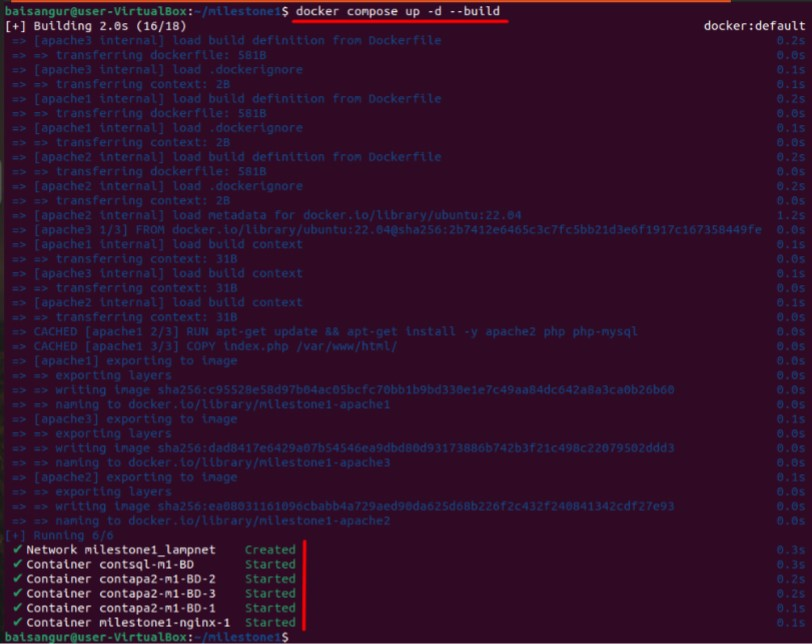
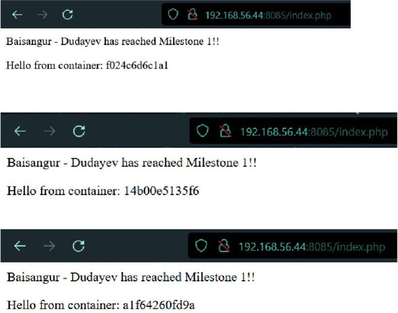
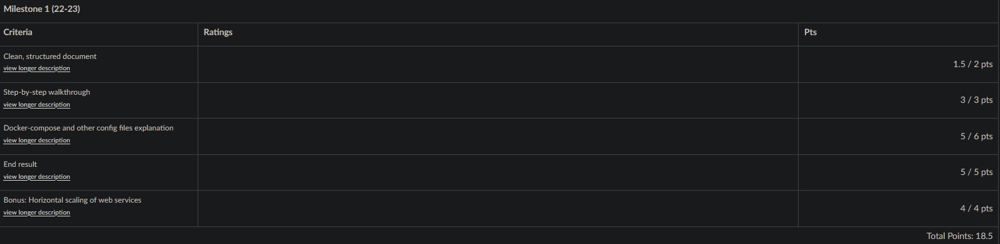

Containerized web stack (Dockerfile & compose)
Linux Webservices

View Project PDF (in dutch, not english)
Data Management and Initialization
Upon running the containers, a webpage displaying "<Student name> has reached Milestone 1!!" became accessible on my Linux server at port 8085. The webpage dynamically fetched my name from the MySQL database. Notably, the data persisted across container removals and stack restarts, as evidenced by a short video demonstration.
To earn bonus points, I implemented horizontal scaling techniques for load balancing web traffic between multiple Apache containers. This involved printing the hostname of each container to the webpage to verify load balancing functionality, supported by an additional video proof.
Adhering to the assignment rules, I utilized Generative AI throughout the process, documenting every prompt and response. My document featured a professional layout, inclusive of a comprehensive introduction, step-by-step procedures, and a reflective conclusion. Furthermore, I explined each line of the Dockerfile and docker-compose.yaml file, ensuring clarity regarding parameters and options chosen.
To earn bonus points, I implemented horizontal scaling techniques for load balancing web traffic between multiple Apache containers. This involved printing the hostname of each container to the webpage to verify load balancing functionality, supported by an additional video proof.
Adhering to the assignment rules, I utilized Generative AI throughout the process, documenting every prompt and response. My document featured a professional layout, inclusive of a comprehensive introduction, step-by-step procedures, and a reflective conclusion. Furthermore, I explined each line of the Dockerfile and docker-compose.yaml file, ensuring clarity regarding parameters and options chosen.
Summary
This project took place within the framework of the Linux Web services course at Thomas More Geel. For my individual assignment, I created both a document and a video demonstrating the process of setting up a LAMP stack using Docker. The task required me to craft a Dockerfile and docker-compose.yaml file to orchestrate the deployment. To enhance my coding process and deepen my understanding of containerization, I employed Generative AI as a supportive tool.
The primary objective was to establish, at minimum, an Apache2 container serving a webpage and another container running MySQL. I decided to extend my efforts for potential extra credits by incorporating additional containers, depending on the approach taken.
For the Apache container, I developed a custom image based on Ubuntu 22.04, with Apache2 pre-installed. The MySQL container was configured to connect to a database containing a single record with my full name, utilizing a publicly available image.
The primary objective was to establish, at minimum, an Apache2 container serving a webpage and another container running MySQL. I decided to extend my efforts for potential extra credits by incorporating additional containers, depending on the approach taken.
For the Apache container, I developed a custom image based on Ubuntu 22.04, with Apache2 pre-installed. The MySQL container was configured to connect to a database containing a single record with my full name, utilizing a publicly available image.



What did i learn?
Throughout this project, I've acquired essential technical skills in Docker, allowing me to configure containers for a LAMP stack. Integrating Generative AI as a supportive tool has not only enhanced my code optimization abilities but also deepened my understanding of containerization concepts. I've learned the importance of ensuring data persistence within containers, especially regarding MySQL databases, and successfully implemented horizontal scaling techniques for load balancing web traffic, emphasizing scalability.